Agent List
Definition:
This is a list of all agents belong to the master, and master can drill down to member list under each agent. From this list, master can update the setting of Agent/Member and view the Daily Statement as well.
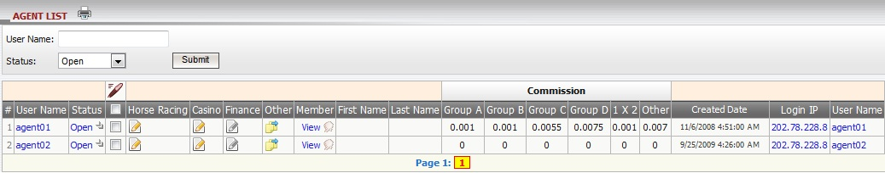
figure 1.1
Term definition:
- Status: Agent status (Open, Closed, Suspended or Disabled).
- Group A,B,C,D: commission amount set for agent based on group, and these setting will be applied for tickets with bet type Handicap, Odd/Even, Over/Under. Note that each member will belong to an explicit group ( A, B, C , D).
- 1 x 2: commission amount set for agent based on member 's turnover with bet type 1 x 2.
- Other: commission amount set for agent based on member 's turnover with other bet types.
How to edit agent information?
- We can edit single agent information or multiple agents information with the following details: information, status, commission, bet settings and position taking.
- For Sportsbook Bet setting and Position Taking, we can set the value for each sport type or use the setting of Soccer/Basketball then apply to other sport types.
Edit Sportsbook
Edit single agent information
- Click on "Status" of agent under status column to edit that agent information, then agent editing page will be opened, refers to New Agent guide line to understand the details in this page.
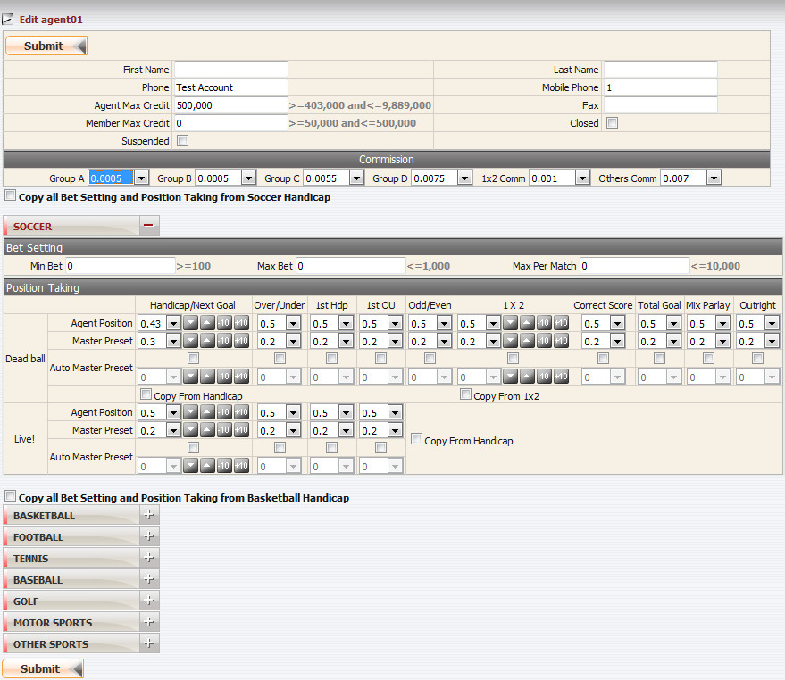
Edit Single Agent
Edit multiple agent information
- From agent list, tick on each agent you want to edit, click "edit icon" then select "Edit multiple Sportsbook's PT", refers to New Agent guide line to understand the details in this page. Remember that all agents will have the same setting.To edit all agents, use function "Check All".
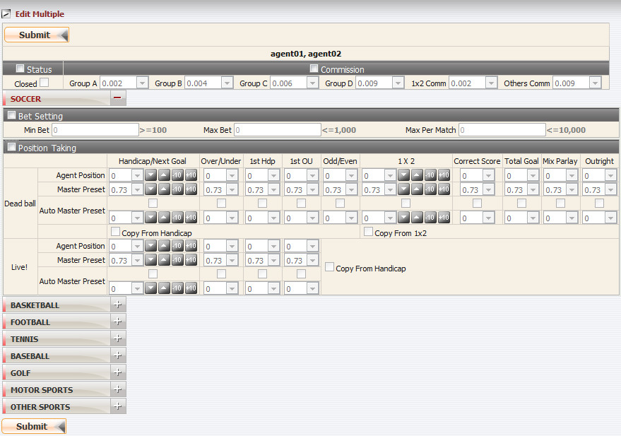
Edit Multiple Agent
Edit Horse Racing
Edit single agent Horse Racing's setting
- Click "Edit icon" under Horse Racing column to edit that agent information, then agent editing page will be opened.
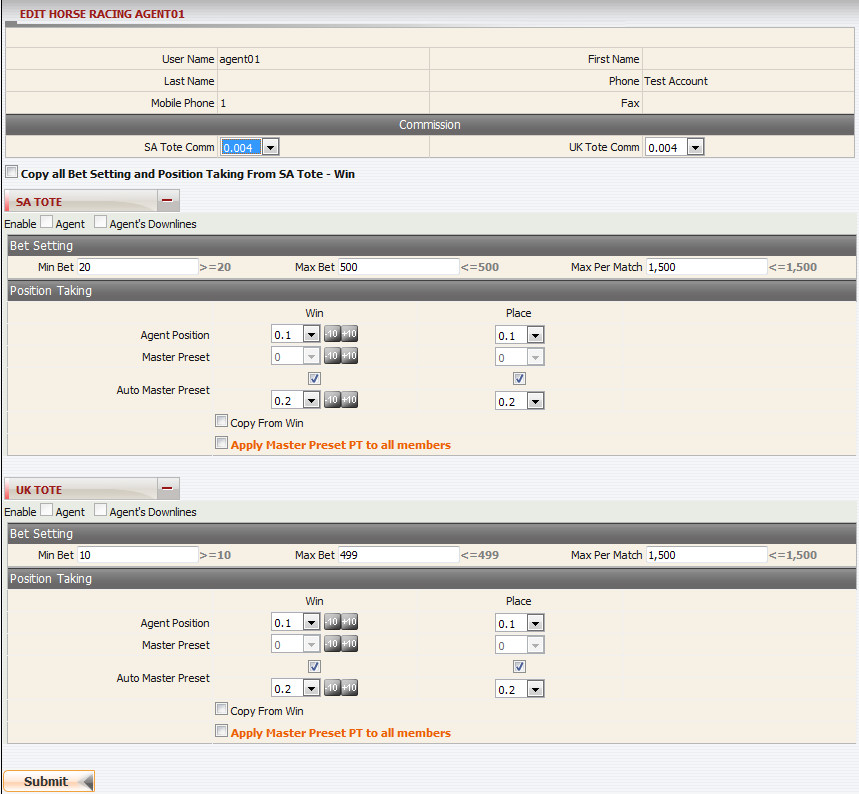
Edit Single Agent
Edit multiple agent Horse Racing's setting
- From agent list, tick on each agent you want to edit, click "edit icon" then select "Edit multiple Horse racing PT", refers to New Agent guide line to understand the details in this page. Remember that all agents will have the same setting. To edit all agents, use function "Check All".
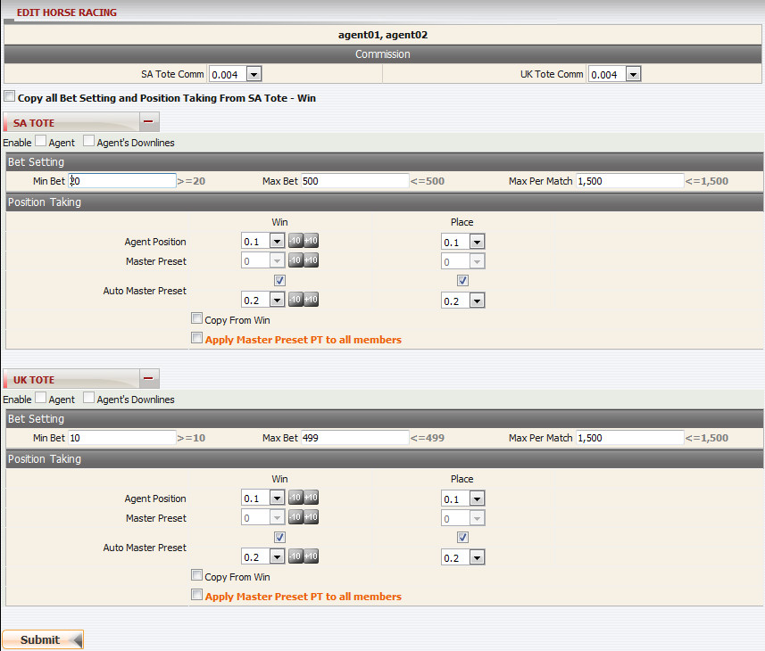
Edit Multiple Agent
Edit Casino
Edit single agent Casino's setting
- Click on "Edit icon" of agent under Casino column to edit that agent information, then agent editing page will be opened.
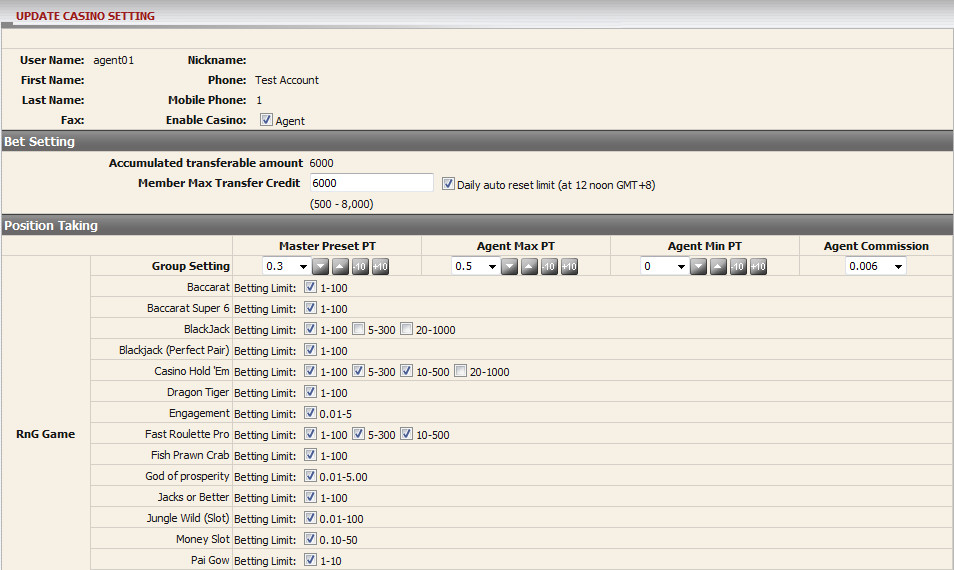
Edit Single Agent
Edit multiple agent Casino's setting
- From agent list, tick on each agent you want to edit, click "edit icon" then select "Edit multiple Casino PT", refers to New Agent guide line to understand the details in this page. Remember that all agents will have the same setting. To edit all agents, use function "Check All".
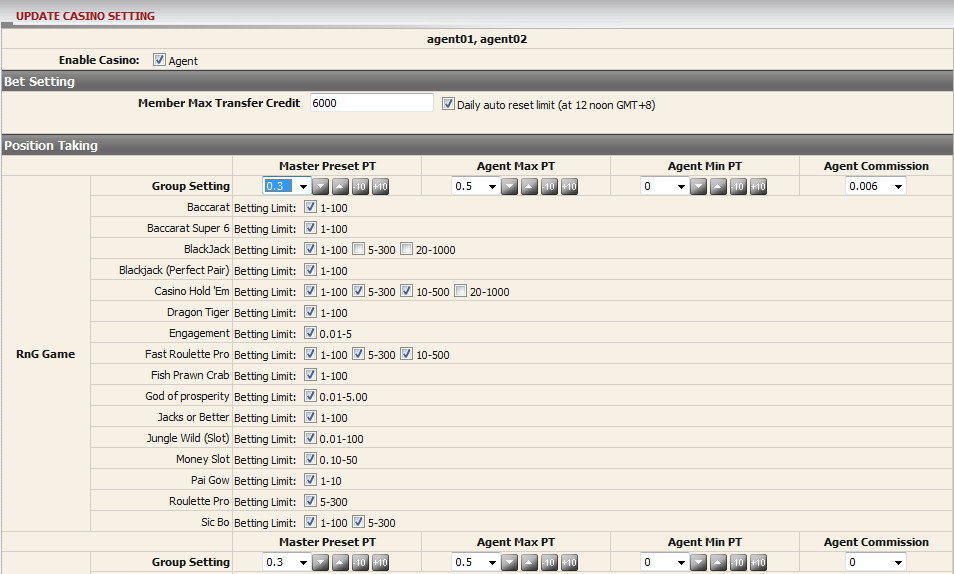
Edit Multiple Agent
Edit Finance
Edit single agent Finance's setting
- Click on "Edit icon" of agent under Finance column to edit that agent information, then agent editing page will be opened.
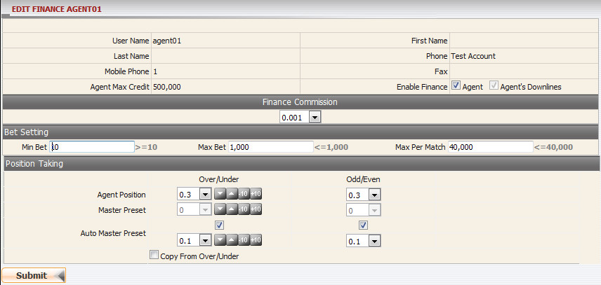
Edit Single Agent
Edit multiple agent Finance's setting
- From agent list, tick on each agent you want to edit, click "edit icon" then select "Edit multiple Finance's PT", refers to New Agent guide line to understand the details in this page. Remember that all agents will have the same setting. To edit all agents, use function "Check All".
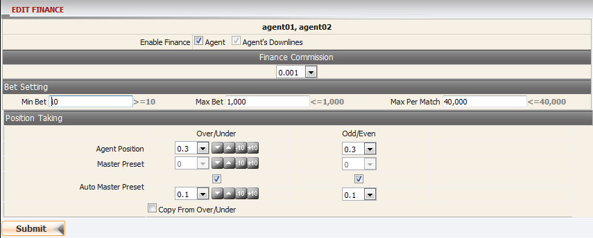
Edit Multiple Agent
How to edit Min PT for agent?
Min Position taking is the minimum value that agent has to take and this value will imediately affect on current agent position taking.
Edit Sportsbook's Min PT
-
Click on "Edit icon" of agent under Other column, then select "Sportsbook's Min PT" to edit Min PT of agent. For Sportsbook Min PT, we can set the value for each sport type or use the setting of Soccer/Basketball then apply to other sport types.
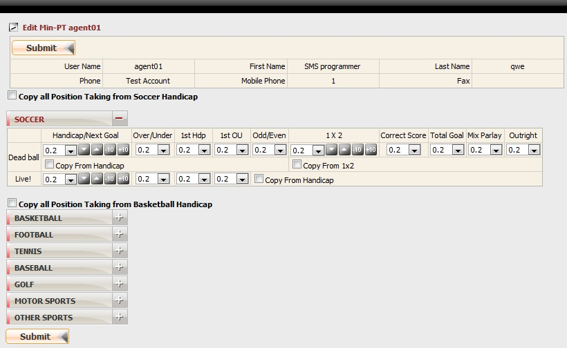
Edit Min PT Agent
Edit Finance's Min PT
-
Click on "Edit icon" of agent under Other column, then select "Finance's Min PT" to edit Min PT of agent.
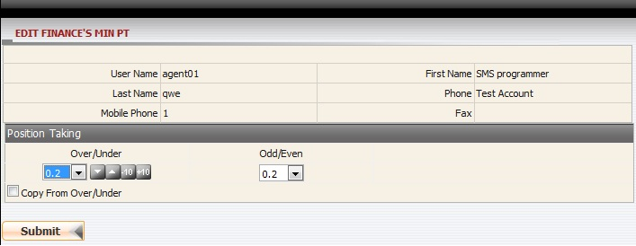
Edit Min PT Agent
Edit Horse Racing Min PT
-
Click on "Edit icon" of agent under Other column, then select "Horse Racing Min PT" to edit Min PT of agent. The Edit Min PT page will be opened:
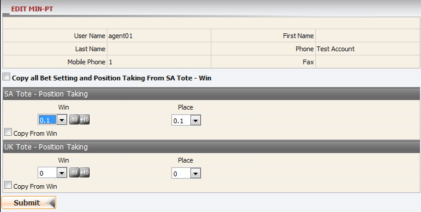
Edit Min PT Agent
How to edit Transfer condition?
Click on "Edit icon" of agent under Other column, then select "Transfer" to edit Transfer condition of agent. The edit Transfer condition page will be opened:
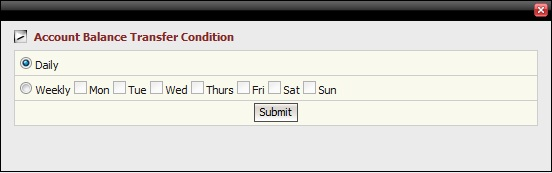
Edit Transfer condition of Agent
Note:
- This option only appears if master is allowed to transfer on daily.
- To edit Transfer condition of agent, master has to be allowed to transfer on Daily.
How to change password of agent?
Click on "Edit icon" of agent under Other column, then select "Password". The change password page will be opened:
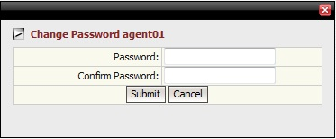
Change Password of Agent
How to view agent daily statement?
Click on agent username, then agent daily statement page will be opened.
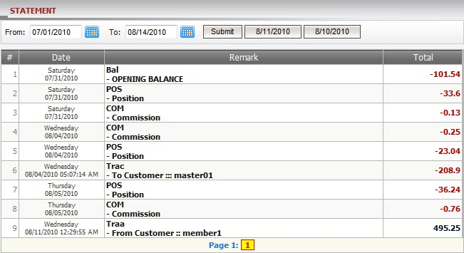
Agent Daily Statement
- Term definition:
- Bal-OPENING BALANCE: sum amount of all winlost and transfer transactions up to the day before Opening balance date.
- POS-Position: Agent's earning amount based on position taking.
- COM-Commission: Agent's remaining commission after deducting member commission.
- Trac-To Customer: Agent's transfer amount with upline (proceeded by upline).
- Traa-From Customer: Agent's transfer amount with members (proceeded by agent).
How to view customer list?
Click on "View" link of agent under Member column to view Customer List of agent. The Customer List page will be opened:
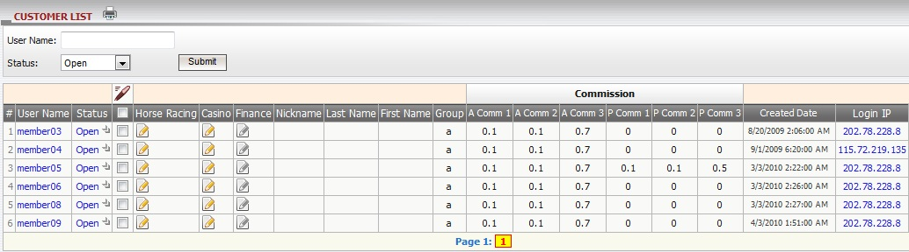
Customer List
Term definition:
- Status: Member status (Open, Closed or Suspended).
- Group: Group which member belongs to, different groups then different commission rates.
- A Comm 1: Agent commission seting applied for tickets with bet types: Handicap, Over/Under, Odd/Even.
- A Comm 2: Agent commission seting applied for tickets with bet type: 1x2.
- A Comm 3: Agent commission seting applied for tickets with other bet types.
- P Comm 1: Player commission seting applied for tickets with bet types: Handicap, Over/Under, Odd/Even.
- P Comm 2: Player commission seting applied for tickets with bet type: 1x2.
- P Comm 3: Player commission seting applied for tickets with other bet types.
How to edit Member information?
- Master can edit single member information or multiple members information with the following details: status and Master position taking on member.
- We can set the position taking for each sport type or use the setting of Soccer/Basketball then apply to other sport types.
Edit Sportsbook
Edit single member information
- Click on "Status" of member under status column to edit that member setting, then member Sportsbook editing page will be opened:
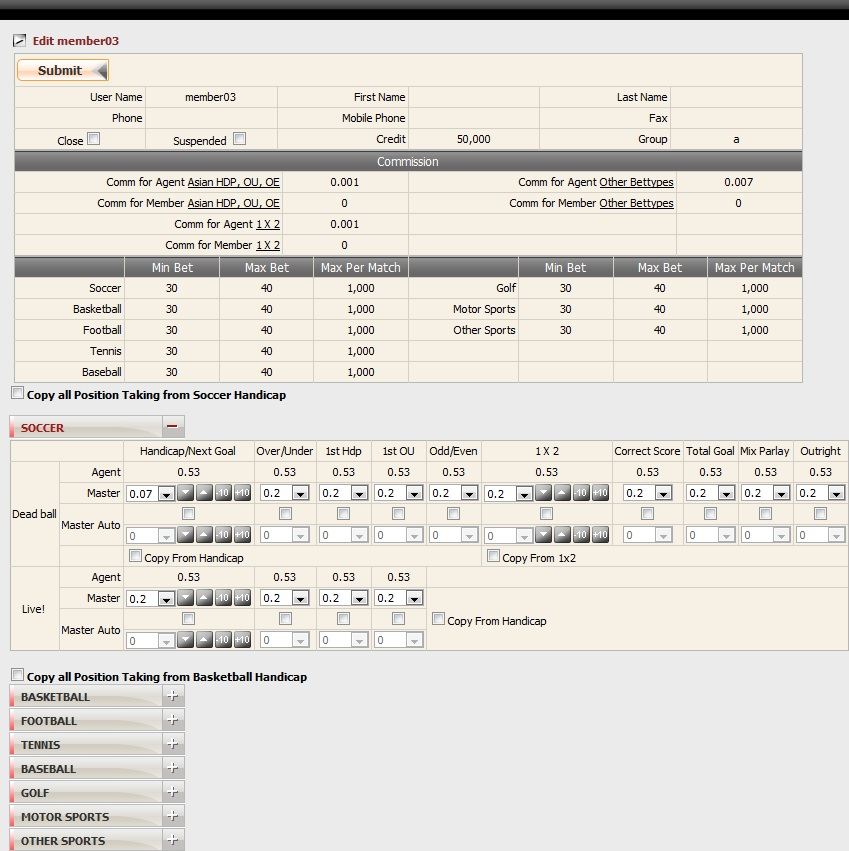
Edit Single Member
Edit multiple member information
- From member list, tick on each member you want to edit, click "edit" icon then select "Edit multiple Sportsbook's PT", then multiple member editing page will be opened. Remember that all members will have the same setting. To edit all members, use function "Check All".
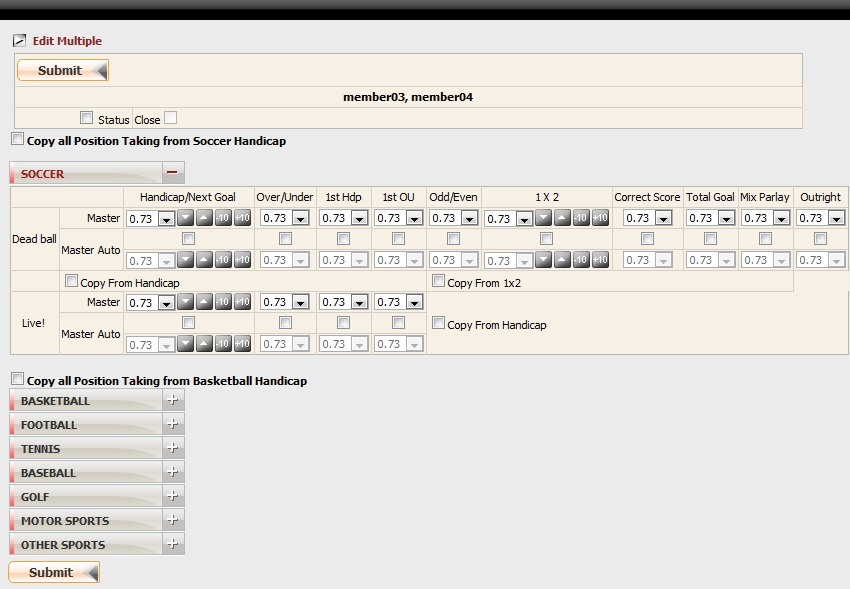
Edit Multiple Member
Edit Horse Racing
Edit single member Horse Racing's setting
- Click "Edit icon" under Horse Racing column to edit that member setting, then member horse racing editing page will be opened:
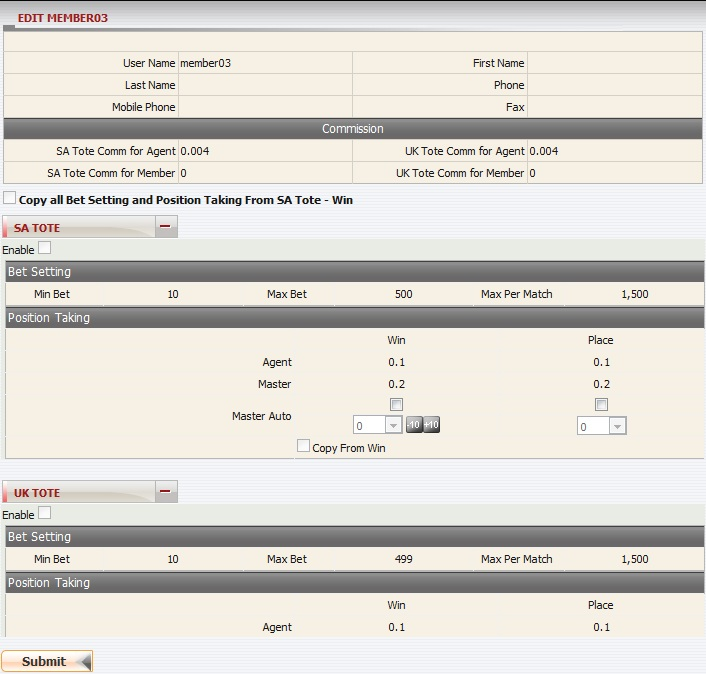
Edit Single Member
Edit multiple member Horse Racing's setting
- Check all , click "edit icon", then select " Edit multiple Horse Racing PT" to perform the update. Remember that all members will have the same setting.
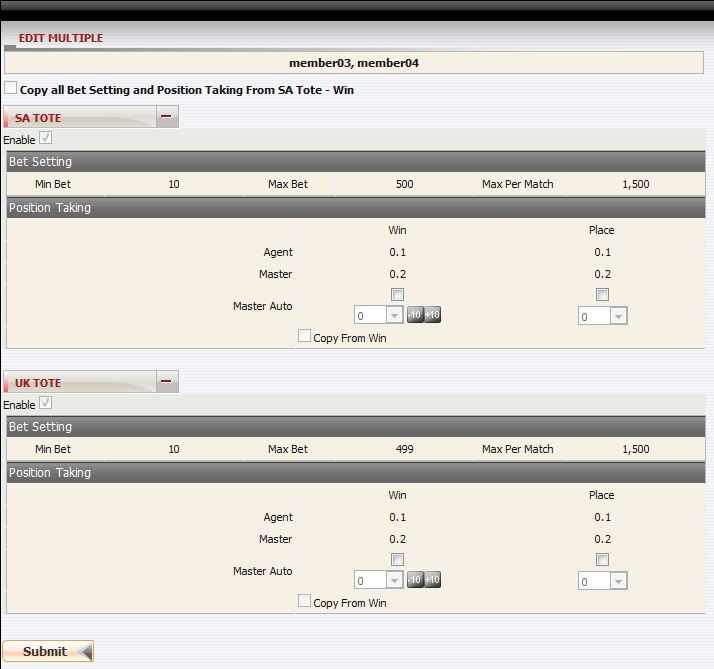
Edit Multiple Member
Edit Casino
Edit single member Casino's setting
- Click on "Edit icon" of member under Casino column to edit that member setting, then member casino editing page will be opened.
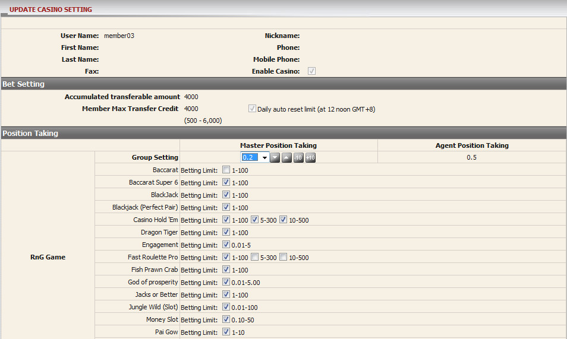
Edit Single Member
Edit multiple member Casino's setting
- Check all , click "edit icon", then select "Edit multiple Casino PT" to perform the update. Remember that all members will have the same setting.
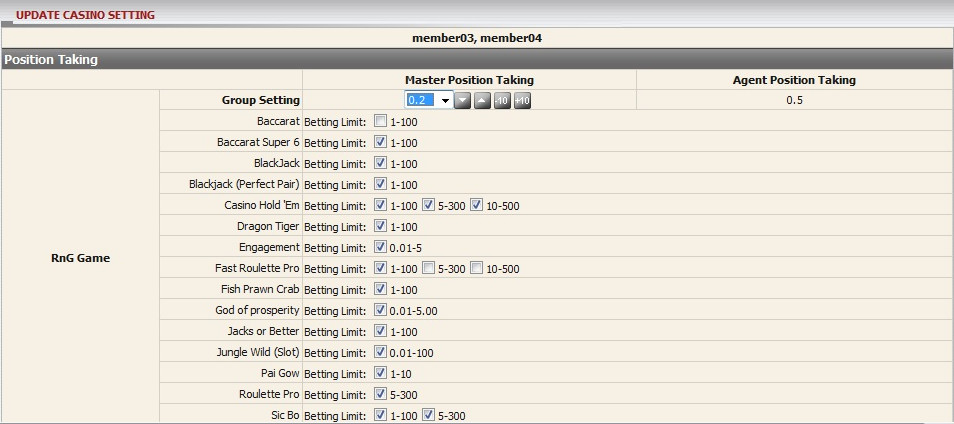
Edit Multiple Member
Edit Finance
Edit single member Finance's setting
- Click on "Edit icon" of member under Finance column to edit that member information, then member editing page will be opened.
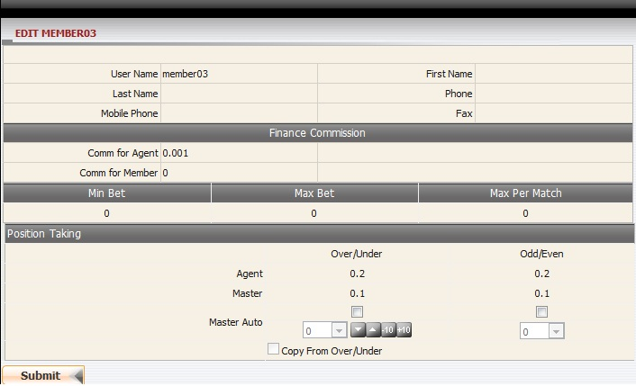
Edit Single Member
Edit multiple member Finance's setting
- Check all , click "edit icon", then select "Edit multiple Finance's PT" to perform the update. Remember that all members will have the same setting.
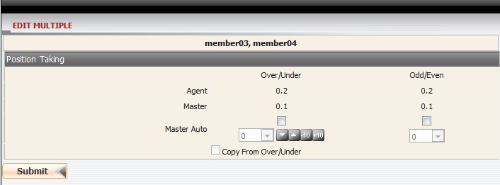
Edit Multiple Member
How to view member daily statement?
Click on member username, then member daily statement page will be opened.
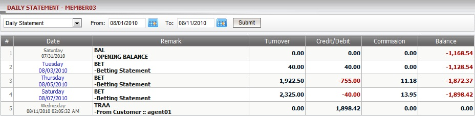
Member Daily Statement
- Term definition:
- BAL-OPENING BALANCE: sum amount of all winlost and transfer transactions up to the day before Opening balance date.
- BET-Betting Statement: win/loss amount on settled tickets.
- BET-Outstanding Bet: total turnover on running/waiting tickets.
- TRAA-To Customer, TRAA-From Customer: Agent's transfer with members (proceeded by agent).